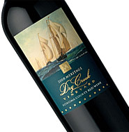

登入 / 加入會員
沒有收到確認信?
我的清單
手機版
清單內有(
3
)款酒
總價$
114,010
史坦因布赫麗絲玲白酒史坦史坦因布赫麗絲玲白酒史坦因史坦因史坦
Brewery Hill Chardonnay Brewery Hill Chardonnay
史坦因布赫麗絲玲白酒史坦史坦因布赫麗絲玲白酒史坦因史坦因史坦
Brewery Hill Chardonnay Brewery Hill Chardonnay
More >>

進階搜尋
轉為原文選單
類型
印度淺色艾爾(142)
英式深色啤酒(60)
美式淺色艾爾(3)
修道院啤酒(14)
德式小麥啤酒(20)
比利時烈艾爾(13)
複選
產區
美國(206)
英國(71)
比利時(52)
日本(50)
台灣(38)
阿根廷(28)
智利(15)
德國(7)
紐西蘭(6)
複選
展開更多
全部列表
風味
展開更多
全部列表
麥味(40)
啤酒花味(36)
苦味(36)
水果味(69)
煙燻味(48)
煙燻味(40)
煙燻味(37)
煙燻味(36)
煙燻味(32)
煙燻味(30)
複選
展開更多
全部列表
酒精濃度
低於 4% (21)
4到6% (107)
6到8% (104)
8到10% (68)
10%以上 (45)
複選
特殊原料
??? (216)
??? (170)
??? (130)
??? (118)
??? (83)
複選
展開更多
容量
330ml (1)
500ml (34)
750ml (3)
275ml (682)
1L (11)
複選
展開更多
評價
RateBeer (21)
BeerAdvocate (107)
WBA (104)
歐洲啤酒之星 (68)
AIBA (45)
複選
展開更多
進階搜尋
近期瀏覽
進階搜尋
▶ 關鍵字
例：獺祭、大吟釀、雫酒...
▶ 單價
請輸入金額
元 ~
元之間
▶ 熱門搜尋
快速到貨(三點前下單隔天到)
超值預訂
▶ SSI四大分類
薰酒
爽酒
熟酒
醇酒
▶ 類型
純米大吟釀
大吟釀酒
吟釀酒
特別純米酒
純米酒
特別本釀造
本釀造
普通酒
梅酒
燒酌
水果酒/其它
▶ 特殊製程
特殊酒母培養方式
生酛
山廢
特殊除渣方式
荒走
雫酒
中取
特殊加熱殺菌和過濾方式
無濾過
生酒
生儲藏
生詰
新酒
古酒
原酒
其他特殊製程
氣泡清酒
赤米酒
灰持酒
貴釀酒
濁酒
秋卸酒
原酒
▶ 精米比例
請輸入數值
%~
%之間
▶ 米種
山田錦
五百萬石
雄町
吟風
初雫
彗星
古城錦
豊盃
華吹雪
華想
吟乙女
吟銀河
改良信交
秋之精
秋田酒小町
美郷錦
仙台坊主
星明
吟之精
藏之華
龜之尾
羽州譽
龜粹
羽州華三部作
豊國
出羽燦燦
出羽之里
雪女神
山酒4號
酒未來
龍之落子
夢之香
越淡麗
一本〆
白藤
高嶺錦
菊水
八反錦2號
北陸12號
玉榮
人心地
夢山水
金紋錦
白樺錦
雄山錦
石川門
九頭龍
神力
越之雫
奧譽
飛騨譽
ひだみのり
飛系酒61号
譽富士
若水
夢山水
夢吟香
伊勢錦
神之穗
弓形穗
日立錦
渡船
栃木酒14
サケビカリ
舞風
酒武藏
白目米
總之舞
滋賀渡舟6號
吟吹雪
祝
愛山
古之舞
白菊
山田穂
新山田穂
早大関
辨慶
播磨錦
但馬強力
野條穂
兵庫雄町
改良山田錦
愛山
なだひかり
六甲錦
灘錦
兵庫夢錦
兵庫北錦
福之花
兵系酒18号
兵系酒65号
兵系酒66号
白鶴錦
杜氏之夢
露葉風
秋津穂
オオセト
松山三井
雫媛
土佐錦
風鳴子
吟之夢
幸玉
改良雄町
神之舞
佐香錦
改良八反流
備前雄町
八反35
八反錦1号
八反錦2号
戀小町
千本錦
船本雄町
比婆雄町
廣島雄町
強力
穀良都
西都之雫
西海
西海134號
西海135號
吟之里
壽限無
美山錦
佐賀之華
大分三井120号
花神樂
日和
富之香
八反草
大瀨戶
夢一獻
▶ 產區
日本
北海道
東北地方
秋田縣
青森縣
福島縣
岩手縣
宮城縣
山形縣
關東地方
千葉縣
群馬縣
茨城縣
神奈川縣
埼玉縣
栃木縣
東京都
甲信越地方
山梨縣
長野縣
新潟縣
北陸地方
福井縣
石川縣
富山縣
東海地方
愛知縣
岐阜縣
三重縣
靜岡縣
近畿地方
兵庫縣
京都府
奈良縣
大阪府
滋賀縣
和歌山縣
中國地方
廣島縣
岡山縣
島根縣
鳥取縣
山口縣
四國
愛媛縣
香川縣
高知縣
德島縣
九州
福岡縣
鹿兒島縣
熊本縣
宮崎縣
長崎縣
大分縣
沖繩縣
佐賀縣
▶ 適飲溫度
雪冷(5℃)
花冷(10℃)
涼冷(15℃)
常溫(20-25℃)
日向燗(30℃)
人肌燗(35℃)
溫燗(40℃)
上燗(45℃)
熱燗(50℃)
飛切燗(55℃)
▶ 杜氏集團
南部杜氏
越後杜氏
丹波杜氏
山內杜氏
會津杜氏
下野杜氏
長野杜氏
福井杜氏
大野杜氏
能登杜氏
但馬杜氏
備中杜氏
出雲杜氏
廣島杜氏
大津杜氏
熊毛杜氏
土佐杜氏
越智杜氏
伊方杜氏
柳川杜氏
三潴杜氏
肥前杜氏
生月杜氏
小值賀杜氏
▶ 酵母
協會酵母
協會1號
協會2號
協會3號
協會4號
協會5號
協會6號
協會7號
協會8號
協會9號
協會10號
協會11號
協會12號
協會13號
協會14號
協會15號
協會601號
協會701號
協會901號
協會1001號
協會1401號
協會1501號
協會1601號
協會1701號
協會1801號
地區酵母
28號
77號
350號
紅色清酒酵母
まほろば
イ号/ロ号
吟釀2號
YK-45
YK-71
佑子之念
宮城
宮城MY
愛美
低發泡性宮城MY
秋田流華AK-1
AK－2F
AK－3F
AK－3
秋田流雅AK-4
こまち
秋田純米
山形KA
YK901-11
YK-0107
F710うつくしま夢
群馬KAZE
長野阿爾卑斯
靜岡HD-1
靜岡SY-103
靜岡NO-2
靜岡NEW-5
靜岡CA-50
靜岡5MT-1
靜岡HD-101
廣島せとうち21號
高知縣CEL19
高知縣CEL24
KW-77
T-1
M310
YS-44
G-1S-3
三重
梨
德島
EK-1
KKK-S
KKK-9
自家酵母
▶ 水質
硬水
軟水
▶ 水源
宮水
御香水
伏流水
金澤清水
龍泉洞地底湖
馬淵川
信濃川
阿賀野川
福島潟
角田山靈水
天龍川
太田川
大井川
狩野川
富士山伏流水
▶ 日本酒度
請輸入數值
~
之間
▶ 酸度
請輸入數值
~
之間
▶ 酒精濃度
請輸入數值
%~
%之間
▶ 胺基酸度
請輸入數值
~
之間
▶ 容量
375ml
750ml
1.5L
▶ 排序方式
--請選擇--
價格
產區
酒莊
年份
類型
評分
只顯示目前有貨的品項
關於我們
｜
聯絡我們
｜
條款及細則
｜
隱私條款
熱門葡萄酒類型與品種
銀橡樹
Silver Oak
查爾斯海德西克
Charles Heidsieck
Cristal酒店
Cristal
巴黎之花
Perrier Jouet
唐培裡儂
Silver Oak
葡萄酒觀察家
Silver Oak
酩和香檳
Silver Oak
葡萄酒愛好者
Silver Oak
熱門葡萄酒類型與品種
銀橡樹
Silver Oak
查爾斯海德西克
Charles Heidsieck
Cristal酒店
Cristal
巴黎之花
Perrier Jouet
唐培裡儂
Silver Oak
葡萄酒觀察家
Silver Oak
酩和香檳
Silver Oak
葡萄酒愛好者
Silver Oak
熱門葡萄酒類型與品種
銀橡樹
Silver Oak
查爾斯海德西克
Charles Heidsieck
Cristal酒店
Cristal
巴黎之花
Perrier Jouet
唐培裡儂
Silver Oak
葡萄酒觀察家
Silver Oak
酩和香檳
Silver Oak
葡萄酒愛好者
Silver Oak
Copyright © 2012 iCheers.tw All Rrights Reserved
關閉
依法令規定，酒類商品無法提供線上交易服務，請留下您的e-mail，
客服人員將會盡快與您e-mail聯繫！
確定